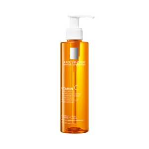

Xhel pastrues sqarues me vitaminë C dhe BHA për një lëkurë më të ndritshme. Xheli pastrues sqarues La Roche-Posay me vitaminë C pastron intensivisht lëkurën e ndjeshme dhe të yndyrshme të fytyrës dhe e çliron atë nga papastërtitë. Në të njëjtën kohë, pastruesi jo-komedogjenik i fytyrës ka një efekt ripërtëritës të lëkurës dhe rafinues të poreve për të siguruar një lëkurë më të ndritshme që nga aplikimi i parë. Për këtë, formula zbutëse dhe hidratuese e lëkurës përmban vitaminë C, e cila është e njohur për efektet e saj antioksiduese dhe anti-plakje, si dhe BHA. Ky përbërës ka veti eksfoliuese, pastron poret dhe stimulon ripërtëritjen e lëkurës. Uji termal nga La Roche-Posay është gjithashtu pjesë e pastruesit të fytyrës me teksturë xheli shkumëzues. Efekti i lëkurës: Anti-plakje, sqarues, pastrues i përshtatshëm për të gjitha llojet e lëkurës, veçanërisht për lëkurën e papastër teksturë xheli në shkumë